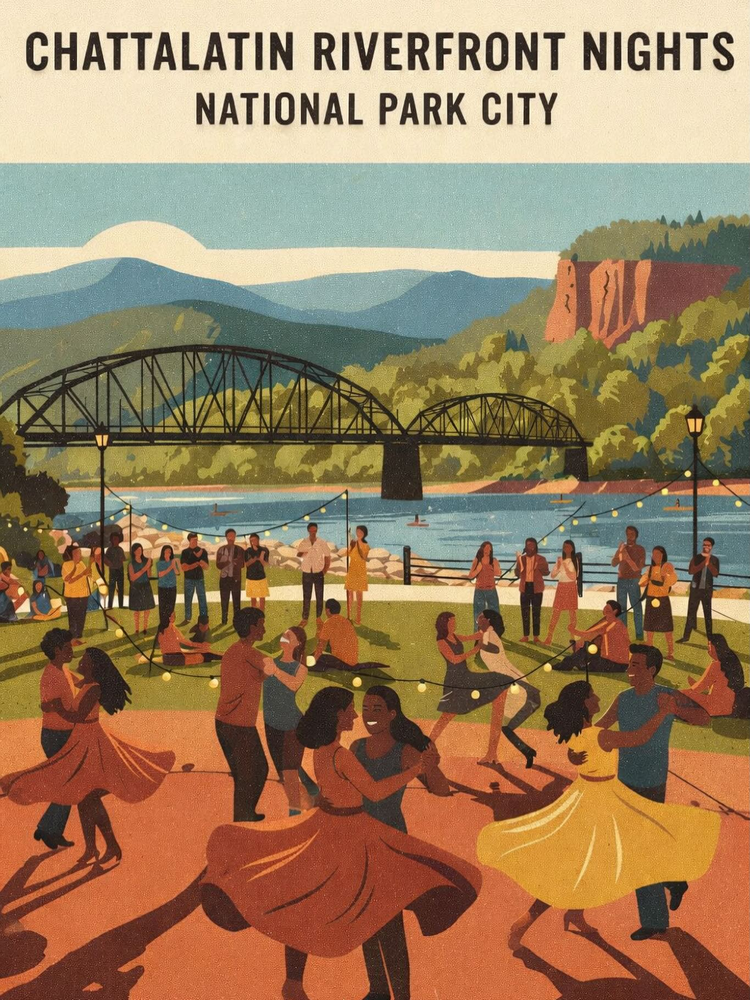
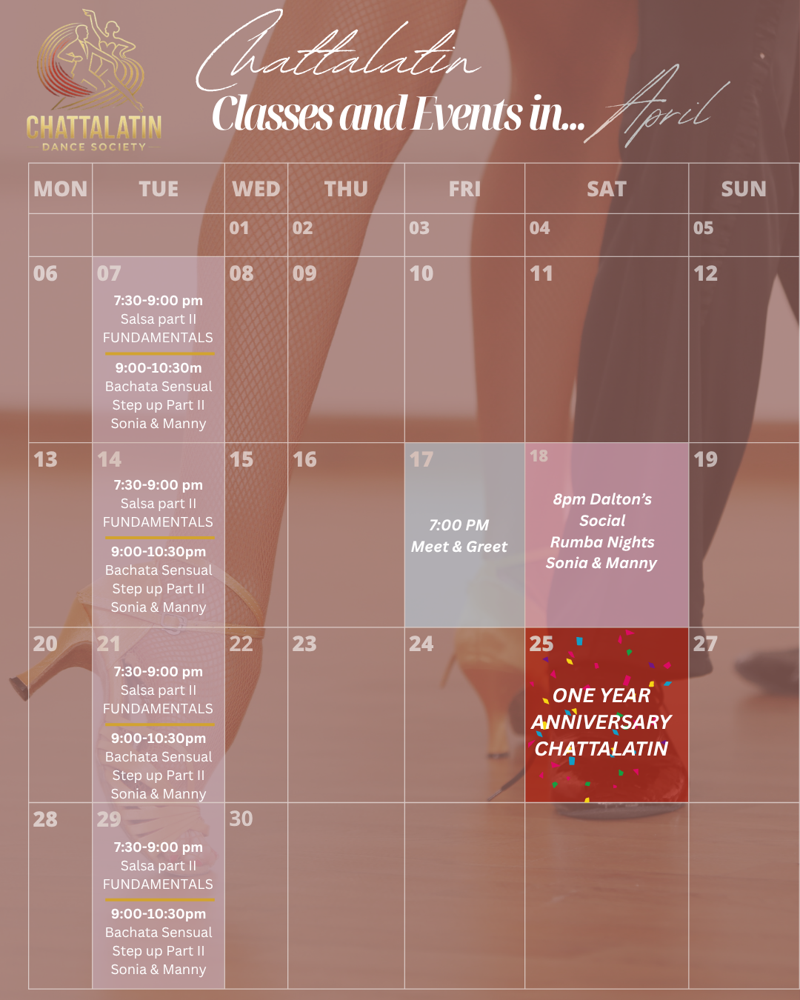
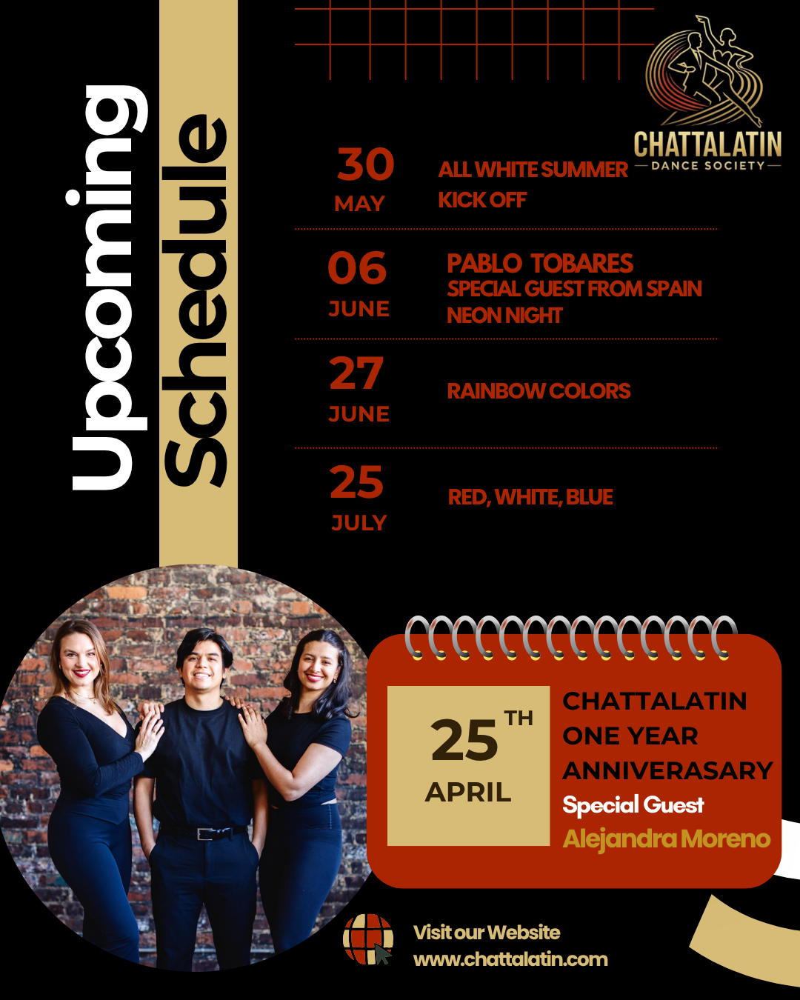

ChattaLatin Salsa & Bachata Event Calendar
Chattanooga, TN
Chattanooga 👀💃
What if we brought salsa & bachata to the riverfront… every week?
We just submitted ChattaLatin Riverfront Nights — a free outdoor dance night at Coolidge Park where anyone can come dance, learn, and enjoy the music by the water 🌊🎶
But here’s the thing… it only happens if the community supports it.
If you’ve ever:
- ✨ Wanted more Latin dance in Chattanooga
- ✨ Loved our socials
- ✨ Or just want something fun and different in the city
👉 We need your vote + support
Vote here
This is how we grow something beautiful together 💛

April Calendar

April 1 year anniversary
Special guest instructor Alejandra teaching salsa at ChattaLatin’s 1-year anniversary in Chattanooga.

ChattaLatin One Year Anniversary Salsa Event in Chattanooga
Join us as we celebrate ONE YEAR of ChattaLatin with a night full of salsa dancing, workshops, and community in Chattanooga, Tennessee. 💃🕺
What started as an idea has grown into something truly special thanks to this amazing community. This anniversary event is all about dancing, learning, and celebrating together.
Special Guest Instructor
We’re excited to welcome Alejandra Moreno from Atlanta, an experienced salsa dancer and instructor, leading two workshops designed for all levels.
Event Details
Date: Saturday, April 25th
Location: Studio 34, Chattanooga, TN
Event: Salsa workshops, social dancing, and
anniversary celebration
Salsa Workshop Schedule
6:00–7:00 PM — Body Movement & Fundamentals
Perfect for beginners or anyone looking to improve flow, control,
and foundational salsa technique.
7:00–8:00 PM — Son Fusion
Explore the roots of salsa with a focus on musicality, timing, and
smooth, grounded movement inspired by son.
8:00 PM–12:00 AM — Social Dancing & Celebration
Enjoy a full night of salsa dancing, connection, and community.
Register for Workshops
Secure your spot for the salsa workshops by signing up here:
Special Anniversary Moment
Be on the lookout at 10:00 PM for special surprises during the celebration — you won’t want to miss it. 🎉
Whether it’s your first salsa class or your hundredth dance, everyone is welcome. Come experience one of the top salsa and bachata communities in Chattanooga and celebrate with us.
Future dates for social dance:
April 25th!
Be on the look out for info because its going to be EPIC!

Classes in April
Sign up in advance is required. Not a drop in class
.png)
.png)
Join us on our Greet and Meet events
.png)
Next meet up- March 20th at 7:00pm.
Location: White Duck
Taco
1519 McCallie Ave, Chattanooga, TN 37404
Our Greet & Meet events are a casual way to connect with the Chattanooga Latin dance community. Come hang out, enjoy good company, and make new friends before hitting the dance floor at socials. 💃🕺 It’s not a class—just a space to share laughs, talk, and build community. Everyone’s welcome, whether you dance or not! 👉 Plus, it’s the perfect ice breaker before the social the following week—you’ll already know familiar faces when you step onto the dance floor.